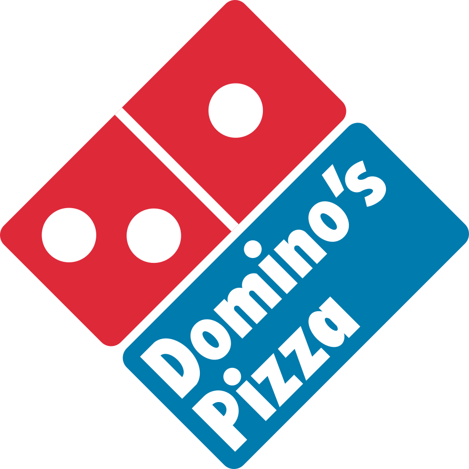
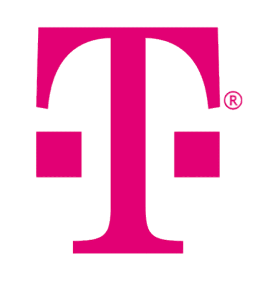
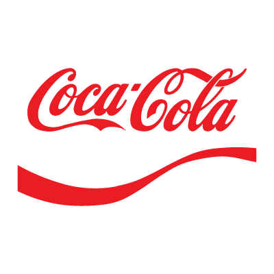
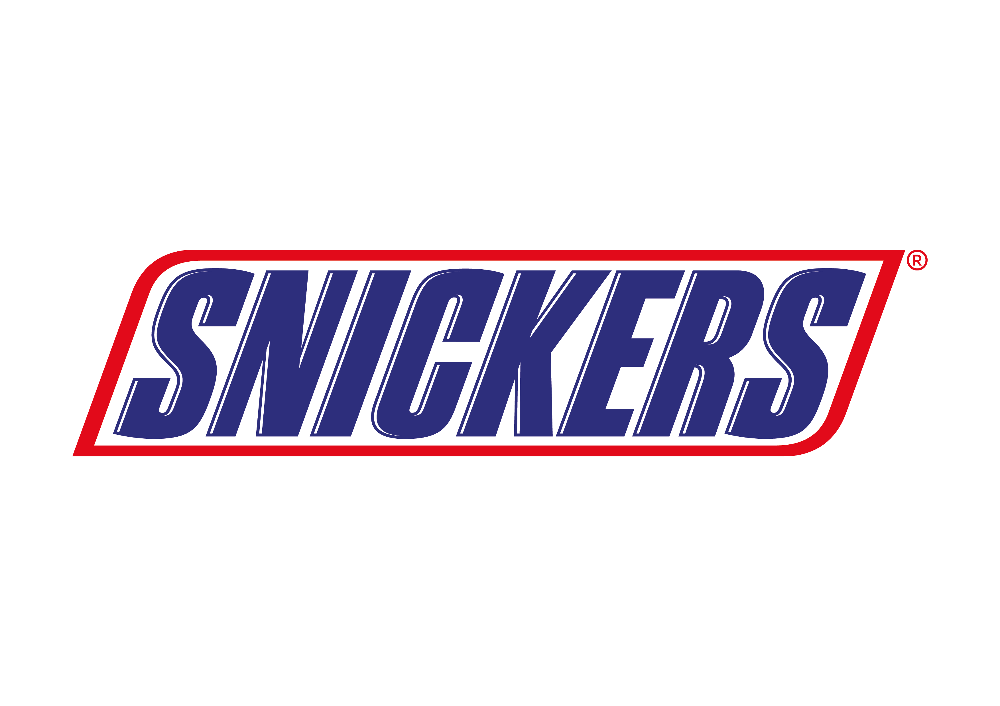

Domino's logo
Food / QSR
Customer criticism became the product reset.
Domino's rebuilt taste, crust and sauce around the language customers were already using, then made that feedback central to the relaunch.
14.3%
reported U.S. same-store sales growth
 McDonald's logo
McDonald's logo
Food / QSR
Demand outside the old journey became the offer.
McDonald's saw people wanted breakfast beyond the old breakfast window and brought the offer closer to how customers wanted to buy.
5.7%
reported U.S. comparable sales growth
Beauty / Personal Care
Beauty language moved closer to real customers.
Dove moved away from narrow category ideals and built around a customer truth: many women did not see themselves reflected in advertising.
60%
reported sales growth
Toys / Entertainment
The turnaround came from returning to core value.
LEGO refocused on the play experience customers cared about most, rebuilding around clearer customer value and product discipline.
4.5x
publicly cited commercial scale increase

T-Mobile logo
Telecoms
Customer frustration became challenger positioning.
T-Mobile built its Un-carrier strategy around pain points customers disliked most, from contracts to upgrade friction and needless complexity.
4.4m+
reported customer additions
Hyundai logo
Automotive
Buyer anxiety became a confidence offer.
Hyundai responded to recession-era buyer fear by reframing the offer around reassurance, not only vehicle features.
8%
reported unit sales growth

Coca-Cola logo
Beverage / FMCG
Generic packaging became personal language.
Share a Coke put names directly on bottles, making the product easier to talk about, share and connect with socially.
11%
reported package sales growth

Snickers logo
Confectionery
A product benefit became a human phrase.
Snickers made hunger instantly recognisable through language people already understood: you are not yourself when hungry.
15.9%
reported sales growth
Fashion / Lingerie
Representation replaced category convention.
Aerie moved away from heavily retouched beauty imagery and aligned more closely with how customers wanted to see themselves.
20%
reported sales growth
Monzo logo
Financial Services / Fintech
Clearer wording removed customer friction.
Monzo simplified parts of its business banking journey and help content so customers could act without needing support.
GBP2m
reported annual revenue increase
Moz logo
SaaS / B2B Tech
Customer objections rebuilt the sales page.
Moz used interviews with paying, trial and cancelled customers to answer real objections earlier in the buying journey.
52%
reported sales increase
Ryanair logo
Airline / Travel
Customer irritation became a service reset.
Ryanair softened avoidable journey friction while keeping the low-cost model customers already understood.
32%
reported profit increase
Expedia logo
Travel / Ecommerce
One confusing field was costing millions.
Expedia found that an optional form field was causing billing confusion. Removing the ambiguity helped more people complete booking.
$12m
reported annual uplift
ASOS logo
Fashion Ecommerce
Checkout language reduced purchase anxiety.
ASOS reframed account creation so the journey felt less like forced registration and more like completing the purchase.
50%
reported checkout abandonment reduction
Heritage Foundation logo
Nonprofit / Fundraising
Clearer explanation increased donor confidence.
The Heritage Foundation improved value-proposition copy and reduced donation-page friction to make the ask easier to act on.
31%
reported revenue per visitor increase